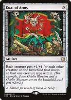
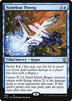
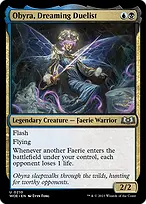
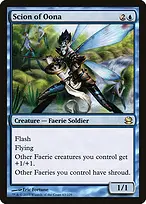

Your goal is to keep mana open and turn useful spells on opponents' turns into an evasive army. Alela rewards your first spell on each opponent's turn, not every spell. Do not spend a needed counter just to make a token: use a cantrip or flash creature when there is nothing important to answer.
This Bracket 3 build uses Rhystic Study, Cyclonic Rift, and Fierce Guardianship as its three Game Changers. It wins through combat, a single Notorious Throng extra turn, and Obyra's drain. There are no built-in infinite combos, extra-turn recursion engines, or mass land denial.
Turn the advantage into a finish

Coat of Arms
A finishing play, usually cast immediately before a decisive attack or with High Fae Trickster just before your turn. It boosts opposing creatures too, and sharing multiple types with one creature still counts that creature only once. Clear an opposing tribal board before relying on it.

Notorious Throng

Connect with a Rogue to unlock prowl, then spend six mana for tokens and one extra turn. Alela herself is a Warlock, not a Rogue; her tokens are Rogues. The new tokens can attack on that extra turn because you controlled them as that turn began. The four-mana normal cast creates tokens but grants no extra turn.

Obyra, Dreaming Duelist
Each new Faerie drains all three opponents, making Notorious Throng threaten life totals without another attack. Throng counts damage dealt to opponents that turn, not Obyra's life loss. If casting Obyra triggers Alela, the resulting token normally enters before Obyra and is not seen by her.

Scion of Oona
Flash anthem and protection for your other Faeries, including the Faerie enchantment Bitterblossom. It does not protect itself, and shroud stops your own targeted effects too. It cannot protect the board from an untargeted wipe.
Alela's combat trigger rewards hitting different opponents: each damaged player can supply a goad trigger, rather than every individual Faerie supplying one. Use goad to send their biggest attackers elsewhere and make future attacks easier. With only one opponent remaining, goad no longer keeps their creatures from attacking you.
A clean finish is a protected attack, then prowled Notorious Throng, then an untap and enlarged second attack. Coat of Arms can accelerate that line, while Obyra can convert the token burst directly into life loss. This deck does not repeatedly recur Throng.
What to keep and how to sequence it
Keep three lands, access to blue and black, and either a two-mana rock or a cheap draw engine, plus useful interaction. A hand of expensive engines and finishers without early plays is a mulligan. Two lands are defensible with cheap selection and acceleration, but missing Alela's fourth mana is costly.
An example keep is Polluted Delta, Underground River, Island, Talisman of Dominance, Consider, Counterspell, and Voracious Tome-Skimmer. Establish mana, use the first draw or interaction opportunity that matters, then deploy Alela when you can afford the table's likely response.
The mana base has 35 dedicated lands plus Sink into Stupor and Waterlogged Teachings as optional lands. Four basics provide fetchable basics and targets for opposing basic-land search effects; the remaining sources prioritize duals and fixing. River of Tears normally makes blue on opponents' turns, but makes black after your land drop on your own turn. Mana Confluence and City of Brass provide either color immediately and independently; use painless sources first when possible because their life costs add to your draw engines and token makers. City of Brass also damages you when another effect taps it.
Underground Sea, Watery Grave, and Undercity Sewers are the three fetchable duals. Fetch Undercity Sewers when you can afford a tapped land, often late in the final opponent's turn; prioritize an untapped source when you need to respond. Preserve fetchlands when your colors are already secure to shuffle away cards from Brainstorm. This mana base emphasizes untapped interaction over extra graveyard utility; keep Cling to Dust or Soul-Guide Lantern available when graveyards matter.
In multiplayer, trade one-for-one only when the threat affects your engine, creates an immediate loss, or prevents your planned finish. Let opponents spend their own removal when possible. Use a cantrip at an opponent's end step if you still want your first-spell trigger and no useful response was needed.
Try to hold enough mana for one useful spell on each opponent's turn, with Bender's Waterskin, Snap, and Unwind stretching the budget. Keep some Faeries untapped for blocking or convoke when tapping out the entire army would expose you.
Before committing to Coat of Arms or Notorious Throng, count opposing flyers, available interaction, your remaining library under Kindred Discovery, and whether a Rogue actually connected. Protect the window to finish rather than spending the whole hand to gain another small increment of value.